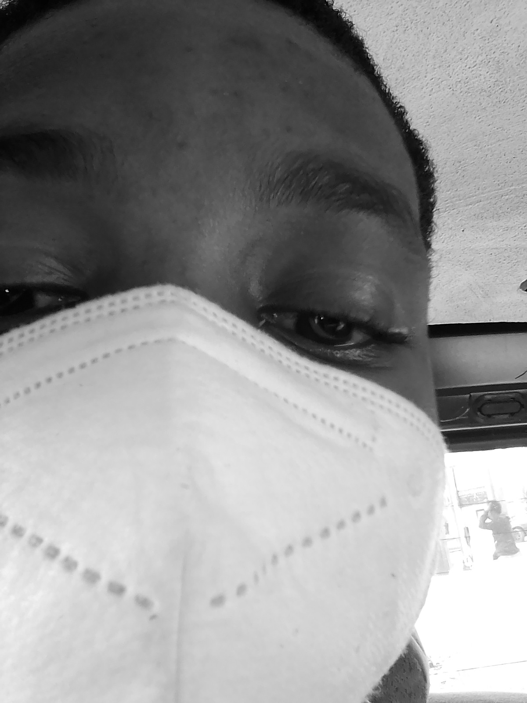

Ifram3

Summary
Detail-oriented and highly skilled Software Engineer with over
five years of experience in developing and implementing innovative
software solutions. Proficient in various programming languages and
technologies, with a proven track record of delivering high-quality
projects on time and within budget. Seeking a challenging role in a
dynamic company to contribute my expertise and drive success.
Education
- Bachelor of Science, Computer Science - University of Nigeria
Nsukka Enugu (2018-2024)
- WAEC/SSCE - Command Day Secondary School Enugu Nigeria (2011-2017)
- St Mary's Nursery/Primary School Emene Enugu (2006-2011)
Work Experience
Software Engineer
- Designed and implemented scalable cloud-based applications
using Java, Spring Boot, and AWS services.
- Collaborated with cross-functional teams to deliver
high-quality software solutions on time and within budget.
- Conducted code reviews, identified and fixed bugs, and
optimized performance to ensure the stability and reliability of software products
- Led the migration of legacy systems to modern technology
stacks, resulting in improved efficiency and cost savings for the organization.
Skills
- Collaboration: ☆☆☆☆☆
- Creative thinking:☆☆
- Critical thinking:☆☆☆
- Problem-solving:☆☆☆☆
- Clear communication:☆☆☆☆☆
Awards and Certifications
- Team Player of the Year - Ifram3 LLC. (March 2021)
Other